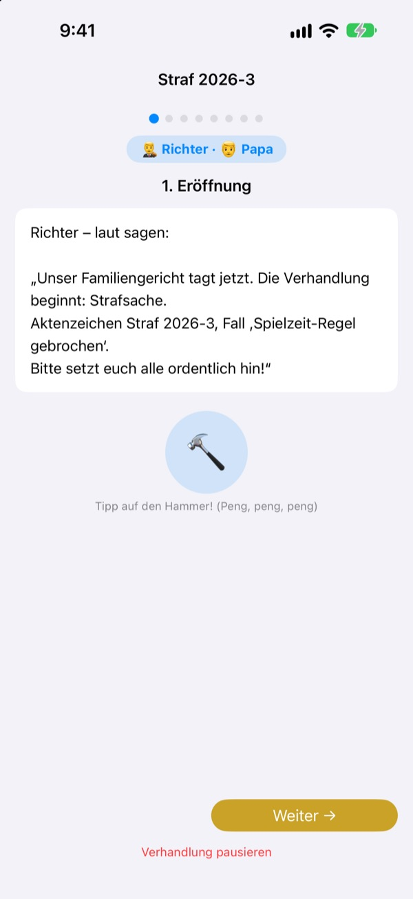
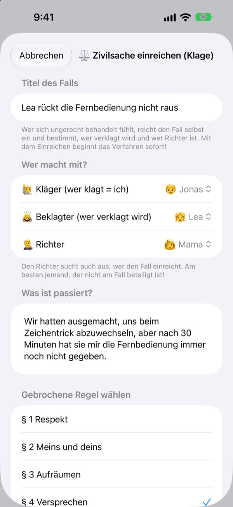
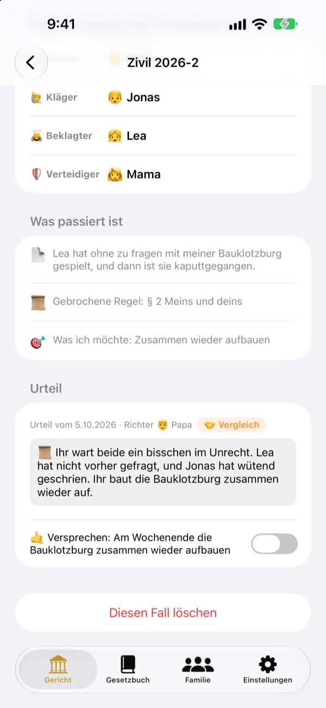
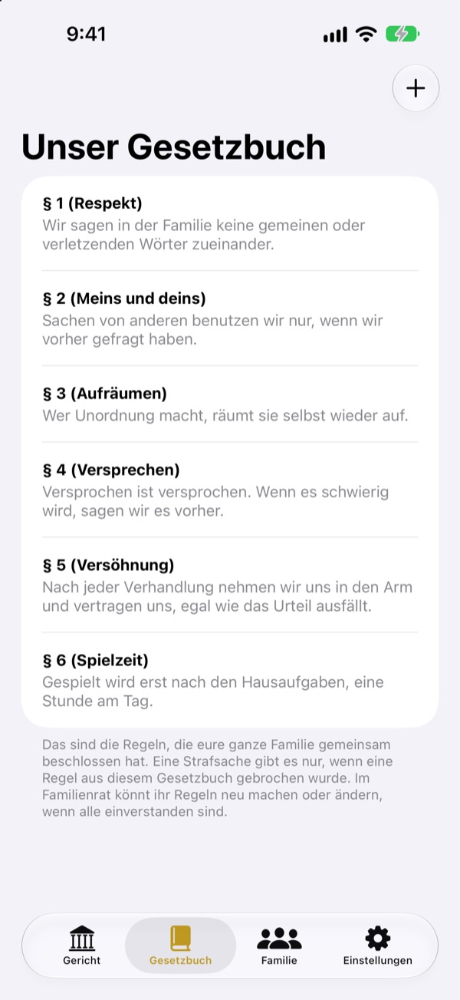

Ungerecht?
Keine Tränen, ab vor Gericht.
Dein Kind reicht selbst als Kläger die Klage ein, die Familie teilt sich Richter und Verteidigung. Ein Skript sagt bei jedem Schritt, wer dran ist und was er sagt. So läuft schon der erste Prozess wie ein echter.
Keine Werbung, keine Käufe, keine Anmeldung. Alles bleibt auf diesem Gerät.

Eröffne einen Prozess
Ein kurzer Fall: „Mein Bruder gibt die Fernbedienung nicht her.“ Stell oben die Sprachstufe um, schlag mit dem Hammer und starte den Timer. Es gibt Töne, also achte auf die Lautstärke.
„Der hat angefangen!“ Müde davon, immer Schiedsrichter zu sein?
Bei Streit entscheidet am Ende meist ein Erwachsener. Wer verliert, weint, weil es ungerecht ist, und wer gewinnt, weiß nicht genau, warum. Familiengericht gibt Kindern eine Reihenfolge: die eigene Sicht ganz erzählen und die andere ganz anhören. Und das Urteil endet mit einem Versprechen, nicht nur mit einer Strafe.
Wer sich ungerecht behandelt fühlt, klagt selbst
Wer etwas ungerecht findet, wird Kläger und reicht die Klage ein. Gegen wen und wer Richter wird, entscheidet die klagende Person. Kinder können sogar Mama und Papa verklagen.
Hat jemand eine Hausregel gebrochen? Dann wirst du Staatsanwalt und erhebst Anklage. Richter kann nur sein, wer weder Kläger noch Beklagter ist.

Urteile enden mit einem Versprechen
Zum Urteil gehört ein Versprechen oder eine Strafe, die ihr abhakt, sobald sie erfüllt ist. Abgeschlossene Fälle werden zu euren Urteilen.
Die Strafvorschläge beginnen mit Wiedergutmachen und Gefühle heilen, eher Reparatur als Bestrafung. Weniger Spiele oder Fernsehen kommt zuletzt.

Eure Regeln macht ihr selbst
Schreibt die Regeln, auf die ihr euch einigt, als Paragrafen auf, etwa Respekt, Aufräumen und Versprechen halten, und ergänzt oder ändert sie jederzeit. In der Klage wählt ihr die gebrochene Regel aus.
„Das Gericht kennenlernen“ erklärt, was Richter, Kläger, Staatsanwälte und Verteidiger tun und wie ein Prozess abläuft.

In drei Schritten startklar
- 1
Familie eintragen
Ein Name und ein Emoji reichen. Kein Konto nötig.
- 2
Fall einreichen
Ungerecht? Zivilsache. Hausregel gebrochen? Strafsache. Dann einen Richter wählen.
- 3
Prozess eröffnen
Dem Skript folgen, mit dem Timer die Zeit halten und mit dem Hammer das Urteil verkünden.
Wörter, die mit deinem Kind mitwachsen
- Richter
- Einfach: Schiri · Gerichtssaal: Vorsitzender Richter
- Kläger
- Einfach: Wer sich beschwert · Gerichtssaal: Kläger
- Beklagter
- Einfach: Wer antwortet · Gerichtssaal: Beklagter
- Staatsanwalt
- Einfach: Wer es gemeldet hat · Gerichtssaal: Staatsanwalt
- Angeklagter
- Einfach: Wer antwortet · Gerichtssaal: Angeklagter
- Verteidiger
- Einfach: Helfer · Gerichtssaal: Verteidiger
- Zivilsache
- Einfach: Ungerecht · Gerichtssaal: Zivilsache
- Strafsache
- Einfach: Regel gebrochen · Gerichtssaal: Strafsache
Wähle die Sprachstufe in den Einstellungen, und die Wörter auf dem Bildschirm und im Skript ändern sich gemeinsam. Für Kindergartenkinder passt Einfach, für Schulkinder Standard.
Häufige Fragen
Ab welchem Alter?
Jedes Kind, das lesen kann, spielt mit einem Elternteil mit. Mit Skript, Hinweisen und der Sprachstufe Einfach können auch Jüngere mitmachen, wenn ein Erwachsener vorliest.
Ist es wirklich kostenlos?
Ja. Keine Werbung und keine Käufe, die Funktionen freischalten. In den Einstellungen gibt es ein freiwilliges Trinkgeld für den Entwickler, das nichts freischaltet oder sperrt.
Braucht es Internet?
Nein. Prozesse und Akten funktionieren komplett offline. Nur um Feedback aus den Einstellungen zu senden, brauchst du Internet und eine iCloud-Anmeldung.
Wo werden die Daten gespeichert?
Familie, Regeln, Prozesse und Urteile liegen nur auf dem Gerät und gehen an keinen Server. Beim Entwickler kommt nur Feedback an, das du selbst schickst, und anonyme Nutzungsstatistik, die dich nicht erkennbar macht.
Kann ich sichern oder auf ein anderes Gerät umziehen?
Mit „Daten sichern“ in den Einstellungen exportierst du alles in eine Datei, mit „Daten laden“ auf dem anderen Gerät ist es wieder genau so da. Auch Sicherungen aus der alten Webversion lassen sich laden.
Läuft es auf dem iPad?
Ja, auf iPhone und iPad. Ein großer Bildschirm ist ideal, wenn die ganze Familie drumherum sitzt.
Und wenn die Strafen zu hart werden?
Wenn der Staatsanwalt eine Strafe fordert, erinnert das Skript daran: nicht zu schwer, sondern machbar. Die Strafvorschläge beginnen mit Wiedergutmachen, Gefühle heilen und sich in den anderen hineinversetzen.
Wie lösche ich alles?
Wenn du die App löschst, verschwinden alle Akten auf dem Gerät mit. Nichts hat es je verlassen, also bleibt auch nirgends etwas übrig. Um gesendetes Feedback zu löschen, schreib uns einfach eine E-Mail.
Fehler, Ideen oder sonst etwas? Schreib an leeo@kakao.com. Du kannst auch in den Einstellungen der App Feedback senden.